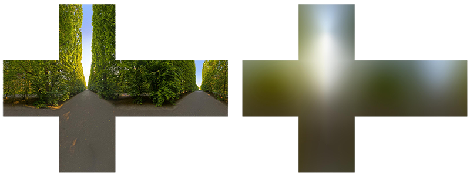

漫反射辐照度
| 原文 | Diffuse irradiance |
|---|---|
| 作者 | JoeyDeVries |
| 翻译 | flyingSnow |
| 校对 |
由于基于图像的光照算法会捕捉部分甚至全部的环境光照，通常认为它是一种更精确的环境光照输入格式，甚至也可以说是一种全局光照的粗略近似。基于此特性，IBL 对 PBR 很有意义，因为当我们将环境光纳入计算之后，物体在物理方面看起来会更加准确。
要开始将 IBL 引入我们的 PBR 系统，让我们再次快速看一下反射方程：
如前所述，我们的主要目标是计算半球 上所有入射光方向 的积分。解决上一节教程中的积分非常简单，因为我们事先已经知道了对积分有贡献的、若干精确的光线方向 。然而这次，来自周围环境的每个方向 的入射光都可能具有一些辐射度，使得解决积分变得不那么简单。这为解决积分提出了两个要求：
- 给定任何方向向量 ，我们需要一些方法来获取这个方向上场景的辐射度。
- 解决积分需要快速且实时。
现在看，第一个要求相对容易些。我们已经有了一些思路：表示环境或场景辐照度的一种方式是（预处理过的）环境立方体贴图，给定这样的立方体贴图，我们可以将立方体贴图的每个纹素视为一个光源。使用一个方向向量 对此立方体贴图进行采样，我们就可以获取该方向上的场景辐照度。
如此，给定方向向量 ，获取此方向上场景辐射度的方法就简化为：
vec3 radiance = texture(_cubemapEnvironment, w_i).rgb;
为了以更有效的方式解决积分，我们需要对其大部分结果进行预处理——或称
仔细研究反射方程，我们发现 BRDF 的漫反射 和镜面 项是相互独立的，我们可以将积分分成两部分：
通过将积分分成两部分，我们可以分开研究漫反射和镜面反射部分，本教程的重点是漫反射积分部分。
仔细观察漫反射积分，我们发现漫反射兰伯特项是一个常数项（颜色 、折射率 和 在整个积分是常数），不依赖于任何积分变量。基于此，我们可以将常数项移出漫反射积分：
这给了我们一个只依赖于 的积分（假设 位于环境贴图的中心）。有了这些知识，我们就可以计算或预计算一个新的立方体贴图，它在每个采样方向——也就是纹素——中存储漫反射积分的结果，这些结果是通过
卷积的特性是，对数据集中的一个条目做一些计算时，要考虑到数据集中的所有其他条目。这里的数据集就是场景的辐射度或环境贴图。因此，要对立方体贴图中的每个采样方向做计算，我们都会考虑半球 上的所有其他采样方向。
为了对环境贴图进行卷积，我们通过对半球 上的大量方向进行离散采样并对其辐射度取平均值，来计算每个输出采样方向 的积分。用来采样方向 的半球，要面向卷积的输出采样方向 。

这个预计算的立方体贴图，在每个采样方向 上存储其积分结果，可以理解为场景中所有能够击中面向 的表面的间接漫反射光的预计算总和。这样的立方体贴图被称为
Important
辐射方程也依赖了位置 ，不过这里我们假设它位于辐照度图的中心。这就意味着所有漫反射间接光只能来自同一个环境贴图，这样可能会破坏现实感（特别是在室内）。渲染引擎通过在场景中放置多个
下面是一个环境立方体贴图及其生成的辐照度图的示例（由 Wave 引擎提供），每个方向 的场景辐射度取平均值。

由于立方体贴图每个纹素中存储了（ 方向的）卷积结果，辐照度图看起来有点像环境的平均颜色或光照图。使用任何一个向量对立方体贴图进行采样，就可以获取该方向上的场景辐照度。
PBR 和 HDR
我们在光照教程中简单提到过：在 PBR 渲染管线中考虑高动态范围(High Dynamic Range, HDR)的场景光照非常重要。由于 PBR 的大部分输入基于实际物理属性和测量，因此为入射光值找到其物理等效值是很重要的。无论我们是对光线的辐射通量进行研究性猜测，还是使用它们的直接物理等效值，诸如一个简单灯泡和太阳之间的这种差异都是很重要的，如果不在 HDR 渲染环境中工作，就无法正确指定每个光的相对强度。
因此，PBR 和 HDR 需要密切合作，但这些与基于图像的光照有什么关系？我们在之前的教程中已经看到，让 PBR 在 HDR 下工作还比较容易。然而，回想一下基于图像的光照，我们将环境的间接光强度建立在环境立方体贴图的颜色值上，我们需要某种方式将光照的高动态范围存储到环境贴图中。
我们一直使用的环境贴图是以立方体贴图形式储存——如同一个天空盒——属于低动态范围(Low Dynamic Range, LDR)。我们直接使用各个面的图像的颜色值，其范围介于 0.0 和 1.0 之间，计算过程也是照值处理。这样虽然可能适合视觉输出，但作为物理输入参数，没有什么用处。
辐射度的 HDR 文件格式
谈及辐射度的文件格式，辐射度文件的格式（扩展名为 .hdr）存储了一张完整的立方体贴图，所有六个面数据都是浮点数，允许指定 0.0 到 1.0 范围之外的颜色值，以使光线具有正确的颜色强度。这个文件格式使用了一个聪明的技巧来存储每个浮点值：它并非直接存储每个通道的 32 位数据，而是每个通道存储 8 位，再以 alpha 通道存放指数——虽然确实会导致精度损失，但是非常有效率，不过需要解析程序将每种颜色重新转换为它们的浮点数等效值。
sIBL 档案 中有很多可以免费获取的辐射度 HDR 环境贴图，下面是一个示例：

可能与您期望的完全不同，因为图像非常扭曲，并且没有我们之前看到的环境贴图的六个立方体贴图面。这张环境贴图是从球体投影到平面上，以使我们可以轻松地将环境信息存储到一张
HDR 和 stb_image.h
直接加载辐射度 HDR 图像需要一些文件格式的知识，虽然不是很困难，但仍然很麻烦。幸运的是，一个常用的头文件库 stb_image.h 支持将辐射度 HDR 图像直接加载为一个浮点数数组，完全符合我们的需要。将 stb_image 添加到项目中之后，加载HDR图像非常简单，如下：
#include "stb_image.h"
[...]
stbi_set_flip_vertically_on_load(true);
int width, height, nrComponents;
float *data = stbi_loadf("newport_loft.hdr", &width, &height, &nrComponents, 0);
unsigned int hdrTexture;
if (data)
{
glGenTextures(1, &hdrTexture);
glBindTexture(GL_TEXTURE_2D, hdrTexture);
glTexImage2D(GL_TEXTURE_2D, 0, GL_RGB16F, width, height, 0, GL_RGB, GL_FLOAT, data);
glTexParameteri(GL_TEXTURE_2D, GL_TEXTURE_WRAP_S, GL_CLAMP_TO_EDGE);
glTexParameteri(GL_TEXTURE_2D, GL_TEXTURE_WRAP_T, GL_CLAMP_TO_EDGE);
glTexParameteri(GL_TEXTURE_2D, GL_TEXTURE_MIN_FILTER, GL_LINEAR);
glTexParameteri(GL_TEXTURE_2D, GL_TEXTURE_MAG_FILTER, GL_LINEAR);
stbi_image_free(data);
}
else
{
std::cout << "Failed to load HDR image." << std::endl;
}
stb_image.h 自动将 HDR 值映射到一个浮点数列表：默认情况下，每个通道32位，每个颜色 3 个通道。我们要将等距柱状投影 HDR 环境贴图转存到 2D 浮点纹理中，这就是所要做的全部工作。
从等距柱状投影到立方体贴图
当然也可以直接使用等距柱状投影图获取环境信息，但是这些操作还是显得相对昂贵，在这种情况下，直接采样立方体贴图的性能更高。因此，在本教程中，我们首先将等距柱状投影图转换为立方体贴图以备进一步处理。请注意，在此过程中，我们还将展示如何对等距柱状格式的投影图采样，如同采样 3D 环境贴图一样，您可以自由选择您喜欢的任何解决方案。
要将等距柱状投影图转换为立方体贴图，我们需要渲染一个（单位）立方体，并从内部将等距柱状图投影到立方体的每个面，并将立方体的六个面的图像构造成立方体贴图。此立方体的顶点着色器只是按原样渲染立方体，并将其局部坐标作为 3D 采样向量传递给片段着色器：
#version 330 core
layout (location = 0) in vec3 aPos;
out vec3 localPos;
uniform mat4 projection;
uniform mat4 view;
void main()
{
localPos = aPos;
gl_Position = projection * view * vec4(localPos, 1.0);
}
而在片段着色器中，我们为立方体的每个部分着色，方法类似于将等距柱状投影图整齐地折叠到立方体的每个面一样。为了实现这一点，我们先获取片段的采样方向，这个方向是从立方体的局部坐标进行插值得到的，然后使用此方向向量和一些三角学魔法对等距柱状投影图进行采样，如同立方体图本身一样。我们直接将结果存储到立方体每个面的片段中，以下就是我们需要做的：
#version 330 core
out vec4 FragColor;
in vec3 localPos;
uniform sampler2D equirectangularMap;
const vec2 invAtan = vec2(0.1591, 0.3183);
vec2 SampleSphericalMap(vec3 v)
{
vec2 uv = vec2(atan(v.z, v.x), asin(v.y));
uv *= invAtan;
uv += 0.5;
return uv;
}
void main()
{
vec2 uv = SampleSphericalMap(normalize(localPos)); // make sure to normalize localPos
vec3 color = texture(equirectangularMap, uv).rgb;
FragColor = vec4(color, 1.0);
}
如果给定HDR等距柱状投影图，在场景的中心渲染一个立方体，将得到如下所示的内容：

这表明我们有效地将等距柱状投影图映射到了立方体，但我们还需要将源HDR图像转换为立方体贴图纹理。为了实现这一点，我们必须对同一个立方体渲染六次，每次面对立方体的一个面，并用帧缓冲对象记录其结果：
unsigned int captureFBO, captureRBO;
glGenFramebuffers(1, &captureFBO);
glGenRenderbuffers(1, &captureRBO);
glBindFramebuffer(GL_FRAMEBUFFER, captureFBO);
glBindRenderbuffer(GL_RENDERBUFFER, captureRBO);
glRenderbufferStorage(GL_RENDERBUFFER, GL_DEPTH_COMPONENT24, 512, 512);
glFramebufferRenderbuffer(GL_FRAMEBUFFER, GL_DEPTH_ATTACHMENT, GL_RENDERBUFFER, captureRBO);
当然，我们此时就可以生成相应的立方体贴图了，首先为其六个面预先分配内存：
unsigned int envCubemap;
glGenTextures(1, &envCubemap);
glBindTexture(GL_TEXTURE_CUBE_MAP, envCubemap);
for (unsigned int i = 0; i < 6; ++i)
{
// note that we store each face with 16 bit floating point values
glTexImage2D(GL_TEXTURE_CUBE_MAP_POSITIVE_X + i, 0, GL_RGB16F,
512, 512, 0, GL_RGB, GL_FLOAT, nullptr);
}
glTexParameteri(GL_TEXTURE_CUBE_MAP, GL_TEXTURE_WRAP_S, GL_CLAMP_TO_EDGE);
glTexParameteri(GL_TEXTURE_CUBE_MAP, GL_TEXTURE_WRAP_T, GL_CLAMP_TO_EDGE);
glTexParameteri(GL_TEXTURE_CUBE_MAP, GL_TEXTURE_WRAP_R, GL_CLAMP_TO_EDGE);
glTexParameteri(GL_TEXTURE_CUBE_MAP, GL_TEXTURE_MIN_FILTER, GL_LINEAR);
glTexParameteri(GL_TEXTURE_CUBE_MAP, GL_TEXTURE_MAG_FILTER, GL_LINEAR);
那剩下要做的就是将等距柱状 2D 纹理捕捉到立方体贴图的面上。
之前在帧缓冲和点阴影教程中讨论过的代码细节，我就不再次详细说明，实际过程可以概括为：面向立方体六个面设置六个不同的视图矩阵，给定投影矩阵的 fov 为 90 度以捕捉整个面，并渲染立方体六次，将结果存储在浮点帧缓冲中：
glm::mat4 captureProjection = glm::perspective(glm::radians(90.0f), 1.0f, 0.1f, 10.0f);
glm::mat4 captureViews[] =
{
glm::lookAt(glm::vec3(0.0f, 0.0f, 0.0f), glm::vec3( 1.0f, 0.0f, 0.0f), glm::vec3(0.0f, -1.0f, 0.0f)),
glm::lookAt(glm::vec3(0.0f, 0.0f, 0.0f), glm::vec3(-1.0f, 0.0f, 0.0f), glm::vec3(0.0f, -1.0f, 0.0f)),
glm::lookAt(glm::vec3(0.0f, 0.0f, 0.0f), glm::vec3( 0.0f, 1.0f, 0.0f), glm::vec3(0.0f, 0.0f, 1.0f)),
glm::lookAt(glm::vec3(0.0f, 0.0f, 0.0f), glm::vec3( 0.0f, -1.0f, 0.0f), glm::vec3(0.0f, 0.0f, -1.0f)),
glm::lookAt(glm::vec3(0.0f, 0.0f, 0.0f), glm::vec3( 0.0f, 0.0f, 1.0f), glm::vec3(0.0f, -1.0f, 0.0f)),
glm::lookAt(glm::vec3(0.0f, 0.0f, 0.0f), glm::vec3( 0.0f, 0.0f, -1.0f), glm::vec3(0.0f, -1.0f, 0.0f))
};
// convert HDR equirectangular environment map to cubemap equivalent
equirectangularToCubemapShader.use();
equirectangularToCubemapShader.setInt("equirectangularMap", 0);
equirectangularToCubemapShader.setMat4("projection", captureProjection);
glActiveTexture(GL_TEXTURE0);
glBindTexture(GL_TEXTURE_2D, hdrTexture);
glViewport(0, 0, 512, 512); // don't forget to configure the viewport to the capture dimensions.
glBindFramebuffer(GL_FRAMEBUFFER, captureFBO);
for (unsigned int i = 0; i < 6; ++i)
{
equirectangularToCubemapShader.setMat4("view", captureViews[i]);
glFramebufferTexture2D(GL_FRAMEBUFFER, GL_COLOR_ATTACHMENT0,
GL_TEXTURE_CUBE_MAP_POSITIVE_X + i, envCubemap, 0);
glClear(GL_COLOR_BUFFER_BIT | GL_DEPTH_BUFFER_BIT);
renderCube(); // renders a 1x1 cube
}
glBindFramebuffer(GL_FRAMEBUFFER, 0);
我们采用帧缓冲的颜色值并围绕立方体贴图的每个面切换纹理目标，直接将场景渲染到立方体贴图的一个面上。一旦这个流程完毕——我们只需做一次——立方体贴图 envCubemap 就应该是原 HDR 图的环境立方体贴图版。
让我们编写一个非常简单的天空盒着色器来测试立方体贴图，用来显示周围的立方体贴图：
#version 330 core
layout (location = 0) in vec3 aPos;
uniform mat4 projection;
uniform mat4 view;
out vec3 localPos;
void main()
{
localPos = aPos;
mat4 rotView = mat4(mat3(view)); // remove translation from the view matrix
vec4 clipPos = projection * rotView * vec4(localPos, 1.0);
gl_Position = clipPos.xyww;
}
注意这里的小技巧 xyww 可以确保渲染的立方体片段的深度值总是 1.0，即最大深度，如立方体贴图教程中所述。注意我们需要将深度比较函数更改为 GL_LEQUAL：
glDepthFunc(GL_LEQUAL);
这个片段着色器直接使用立方体的片段局部坐标，对环境立方体贴图采样：
#version 330 core
out vec4 FragColor;
in vec3 localPos;
uniform samplerCube environmentMap;
void main()
{
vec3 envColor = texture(environmentMap, localPos).rgb;
envColor = envColor / (envColor + vec3(1.0));
envColor = pow(envColor, vec3(1.0/2.2));
FragColor = vec4(envColor, 1.0);
}
我们使用插值的立方体顶点坐标对环境贴图进行采样，这些坐标直接对应于正确的采样方向向量。注意，相机的平移分量被忽略掉了，在立方体上渲染此着色器会得到非移动状态下的环境贴图。另外还请注意，当我们将环境贴图的 HDR 值直接输出到默认的 LDR 帧缓冲时，希望对颜色值进行正确的色调映射。此外，默认情况下，几乎所有 HDR 图都处于线性颜色空间中，因此我们需要在写入默认帧缓冲之前应用伽马校正。
现在，在之前渲染的球体上渲染环境贴图，效果应该如下图：

好的…我们用了相当多的设置终于来到了这里，我们设法成功地读取了 HDR 环境贴图，将它从等距柱状投影图转换为立方体贴图，并将 HDR 立方体贴图作为天空盒渲染到了场景中。此外，我们设置了一个小系统来渲染立方体贴图的所有六个面，我们在计算环境贴图卷积时还会需要它。您可以在此处找到整个转化过程的源代码。
立方体贴图的卷积
如本节教程开头所述，我们的主要目标是计算所有间接漫反射光的积分，其中光照的辐照度以环境立方体贴图的形式给出。我们已经知道，在方向 上采样 HDR 环境贴图，可以获得场景在此方向上的辐射度 。虽然如此，要解决积分，我们仍然不能仅从一个方向对环境贴图采样，而要从半球 上所有可能的方向进行采样，这对于片段着色器而言还是过于昂贵。
然而，计算上又不可能从 的每个可能的方向采样环境光照，理论上可能的方向数量是无限的。不过我们可以对有限数量的方向采样以近似求解，在半球内均匀间隔或随机取方向可以获得一个相当精确的辐照度近似值，从而离散地计算积分 。
然而，对于每个片段实时执行此操作仍然太昂贵，因为仍然需要非常大的样本数量才能获得不错的结果，因此我们希望可以
给定任何方向向量 ，我们可以对预计算的辐照度图采样以获取方向 的总漫反射辐照度。为了确定片段上间接漫反射光的数量（辐照度），我们获取以表面法线为中心的半球的总辐照度。获取场景辐照度的方法就简化为：
vec3 irradiance = texture(irradianceMap, N);
现在，为了生成辐照度贴图，我们需要将环境光照求卷积，转换为立方体贴图。假设对于每个片段，表面的半球朝向法向量 ，对立方体贴图进行卷积等于计算朝向 的半球 中每个方向 的总平均辐射率。

值得庆幸的是，本节教程中所有繁琐的设置并非毫无用处，因为我们现在可以直接获取转换后的立方体贴图，在片段着色器中对其进行卷积，渲染所有六个面，将其结果用帧缓冲捕捉到新的立方体贴图中。之前已经将等距柱状投影图转换为立方体贴图，这次我们可以采用完全相同的方法，但使用不同的片段着色器：
#version 330 core
out vec4 FragColor;
in vec3 localPos;
uniform samplerCube environmentMap;
const float PI = 3.14159265359;
void main()
{
// the sample direction equals the hemisphere's orientation
vec3 normal = normalize(localPos);
vec3 irradiance = vec3(0.0);
[...] // convolution code
FragColor = vec4(irradiance, 1.0);
}
environmentMap 是从等距柱状投影图转换而来的 HDR 立方体贴图。 有很多方法可以对环境贴图进行卷积，但是对于本教程，我们的方法是：对于立方体贴图的每个纹素，在纹素所代表的方向的半球 内生成固定数量的采样向量，并对采样结果取平均值。数量固定的采样向量将均匀地分布在半球内部。注意，积分是连续函数，在采样向量数量固定的情况下离散地采样只是一种近似计算方法，我们采样的向量越多，就越接近正确的结果。 反射方程的积分 是围绕立体角 旋转，而这个立体角相当难以处理。为了避免对难处理的立体角求积分，我们使用球坐标 和 来代替立体角。

对于围绕半球大圆的航向角 ，我们在 到 内采样，而从半球顶点出发的倾斜角 ，采样范围是 到 。于是我们更新一下反射积分方程：
求解积分需要我们在半球 内采集固定数量的离散样本并对其结果求平均值。分别给每个球坐标轴指定离散样本数量 和 以求其黎曼和，积分式会转换为以下离散版本：
当我们离散地对两个球坐标轴进行采样时，每个采样近似代表了半球上的一小块区域，如上图所示。注意，由于球的一般性质，当采样区域朝向中心顶部会聚时，天顶角 变高，半球的离散采样区域变小。为了平衡较小的区域贡献度，我们使用 来权衡区域贡献度，这就是多出来的 的作用。
给定每个片段的积分球坐标，对半球进行离散采样，过程代码如下：
vec3 irradiance = vec3(0.0);
vec3 up = vec3(0.0, 1.0, 0.0);
vec3 right = normalize(cross(up, normal));
up = normalize(cross(normal, right));
float sampleDelta = 0.025;
float nrSamples = 0.0;
for(float phi = 0.0; phi < 2.0 * PI; phi += sampleDelta)
{
for(float theta = 0.0; theta < 0.5 * PI; theta += sampleDelta)
{
// spherical to cartesian (in tangent space)
vec3 tangentSample = vec3(sin(theta) * cos(phi), sin(theta) * sin(phi), cos(theta));
// tangent space to world
vec3 sampleVec = tangentSample.x * right + tangentSample.y * up + tangentSample.z * N;
irradiance += texture(environmentMap, sampleVec).rgb * cos(theta) * sin(theta);
nrSamples++;
}
}
irradiance = PI * irradiance * (1.0 / float(nrSamples));
我们以一个固定的 sampleDelta 增量值遍历半球，减小（或增加）这个增量将会增加（或减少）精确度。
在两层循环内，我们获取一个球面坐标并将它们转换为 3D 直角坐标向量，将向量从切线空间转换为世界空间，并使用此向量直接采样 HDR 环境贴图。我们将每个采样结果加到 irradiance，最后除以采样的总数，得到平均采样辐照度。请注意，我们将采样的颜色值乘以系数 cos(θ) ，因为较大角度的光较弱，而系数 sin(θ) 则用于权衡较高半球区域的较小采样区域的贡献度。
现在剩下要做的就是设置 OpenGL 渲染代码，以便我们可以对之前捕捉的 envCubemap 求卷积。首先我们创建一个辐照度立方体贴图（重复一遍，我们只需要在渲染循环之前执行一次）：
unsigned int irradianceMap;
glGenTextures(1, &irradianceMap);
glBindTexture(GL_TEXTURE_CUBE_MAP, irradianceMap);
for (unsigned int i = 0; i < 6; ++i)
{
glTexImage2D(GL_TEXTURE_CUBE_MAP_POSITIVE_X + i, 0, GL_RGB16F, 32, 32, 0,
GL_RGB, GL_FLOAT, nullptr);
}
glTexParameteri(GL_TEXTURE_CUBE_MAP, GL_TEXTURE_WRAP_S, GL_CLAMP_TO_EDGE);
glTexParameteri(GL_TEXTURE_CUBE_MAP, GL_TEXTURE_WRAP_T, GL_CLAMP_TO_EDGE);
glTexParameteri(GL_TEXTURE_CUBE_MAP, GL_TEXTURE_WRAP_R, GL_CLAMP_TO_EDGE);
glTexParameteri(GL_TEXTURE_CUBE_MAP, GL_TEXTURE_MIN_FILTER, GL_LINEAR);
glTexParameteri(GL_TEXTURE_CUBE_MAP, GL_TEXTURE_MAG_FILTER, GL_LINEAR);
由于辐照度图对所有周围的辐射值取了平均值，因此它丢失了大部分高频细节，所以我们可以以较低的分辨率（32x32）存储，并让 OpenGL 的线性滤波完成大部分工作。接下来，我们将捕捉到的帧缓冲图像缩放到新的分辨率：
glBindFramebuffer(GL_FRAMEBUFFER, captureFBO);
glBindRenderbuffer(GL_RENDERBUFFER, captureRBO);
glRenderbufferStorage(GL_RENDERBUFFER, GL_DEPTH_COMPONENT24, 32, 32);
我们使用卷积着色器——和捕捉环境立方体贴图类似的方式——来对环境贴图求卷积：
irradianceShader.use();
irradianceShader.setInt("environmentMap", 0);
irradianceShader.setMat4("projection", captureProjection);
glActiveTexture(GL_TEXTURE0);
glBindTexture(GL_TEXTURE_CUBE_MAP, envCubemap);
glViewport(0, 0, 32, 32); // don't forget to configure the viewport to the capture dimensions.
glBindFramebuffer(GL_FRAMEBUFFER, captureFBO);
for (unsigned int i = 0; i < 6; ++i)
{
irradianceShader.setMat4("view", captureViews[i]);
glFramebufferTexture2D(GL_FRAMEBUFFER, GL_COLOR_ATTACHMENT0,
GL_TEXTURE_CUBE_MAP_POSITIVE_X + i, irradianceMap, 0);
glClear(GL_COLOR_BUFFER_BIT | GL_DEPTH_BUFFER_BIT);
renderCube();
}
glBindFramebuffer(GL_FRAMEBUFFER, 0);
现在，完成这个流程之后，我们应该得到了一个预计算好的辐照度图，可以直接将其用于IBL 计算。为了查看我们是否成功地对环境贴图进行了卷积，让我们将天空盒的环境采样贴图替换为辐照度贴图：

如果它看起来像模糊的环境贴图，说明您已经成功地对环境贴图进行了卷积。
PBR 和间接辐照度光照
辐照度图表示所有周围的间接光累积的反射率的漫反射部分的积分。注意光不是来自任何直接光源，而是来自周围环境，我们将间接漫反射和间接镜面反射视为环境光，取代了我们之前设定的常数项。
首先，务必将预计算的辐照度图添加为一个立方体采样器：
uniform samplerCube irradianceMap;
给定一张辐照度图，它存储了场景中的所有间接漫反射光，获取片段的辐照度就简化为给定法线的一次纹理采样：
// vec3 ambient = vec3(0.03);
vec3 ambient = texture(irradianceMap, N).rgb;
然而，由于间接光照包括漫反射和镜面反射两部分，正如我们从分割版的反射方程中看到的那样，我们需要对漫反射部分进行相应的加权。与我们在前一节教程中所做的类似，我们使用菲涅耳公式来计算表面的间接反射率，我们从中得出折射率或称漫反射率：
vec3 kS = fresnelSchlick(max(dot(N, V), 0.0), F0);
vec3 kD = 1.0 - kS;
vec3 irradiance = texture(irradianceMap, N).rgb;
vec3 diffuse = irradiance * albedo;
vec3 ambient = (kD * diffuse) * ao;
由于环境光来自半球内围绕法线 N 的所有方向，因此没有一个确定的半向量来计算菲涅耳效应。为了模拟菲涅耳效应，我们用法线和视线之间的夹角计算菲涅耳系数。然而，之前我们是以受粗糙度影响的微表面半向量作为菲涅耳公式的输入，但我们目前没有考虑任何粗糙度，表面的反射率总是会相对较高。间接光和直射光遵循相同的属性，因此我们期望较粗糙的表面在边缘反射较弱。由于我们没有考虑表面的粗糙度，间接菲涅耳反射在粗糙非金属表面上看起来有点过强（为了演示目的略微夸大）：

我们可以通过在 Sébastien Lagarde 提出的 Fresnel-Schlick 方程中加入粗糙度项来缓解这个问题：
vec3 fresnelSchlickRoughness(float cosTheta, vec3 F0, float roughness)
{
return F0 + (max(vec3(1.0 - roughness), F0) - F0) * pow(1.0 - cosTheta, 5.0);
}
在计算菲涅耳效应时纳入表面粗糙度，环境光代码最终确定为：
vec3 kS = fresnelSchlickRoughness(max(dot(N, V), 0.0), F0, roughness);
vec3 kD = 1.0 - kS;
vec3 irradiance = texture(irradianceMap, N).rgb;
vec3 diffuse = irradiance * albedo;
vec3 ambient = (kD * diffuse) * ao;
如您所见，实践上基于图像的光照计算非常简单，只需要采样一次立方体贴图，大部分的工作量在于将环境贴图预计算或卷积成辐照度图。
回到我们在光照教程中建立的初始场景，场景中排列的球体金属度沿垂直方向递增，粗糙度沿水平方向递增。向场景中添加基于漫反射图像的光照之后，它看起来像这样：

现在看起来仍然有点奇怪，因为金属度较高的球体需要某种形式的反射以便看起来更像金属表面（因为金属表面没有漫反射），不过目前只有来自点光源的反射——而且可以说几乎没有。不过尽管如此，您也可以看出，球体在环境中的感觉更加和谐了（特别是在环境贴图之间切换的时候），因为表面会正确地响应环境光照。
您可以在此处找到以上讨论过的整套源代码。在下一节教程中，我们将添加反射积分的间接镜面反射部分，此时我们将真正看到 PBR 的力量。
进阶阅读
- Coding Labs: Physically based rendering：介绍 PBR ，如何以及为何要生成辐照度图。
- The Mathematics of Shading：借助 ScratchAPixel，对本教程中涉及的一些数学知识的简要介绍，特别是关于极坐标和积分。